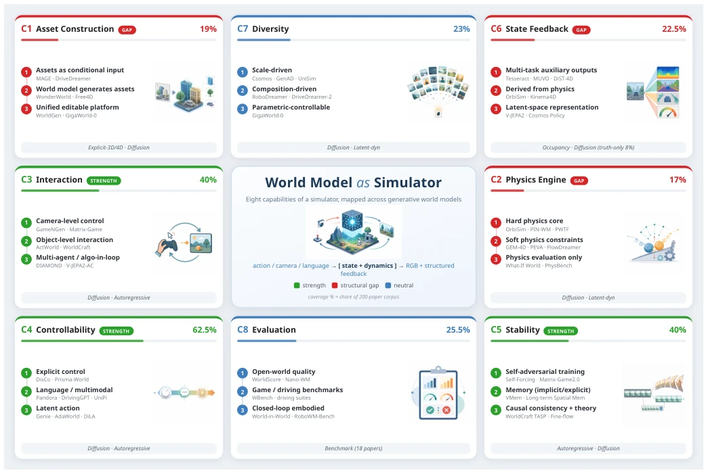
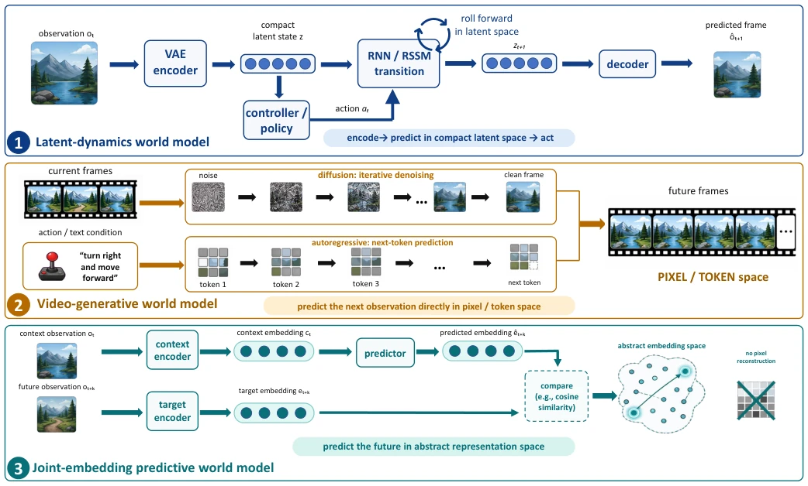
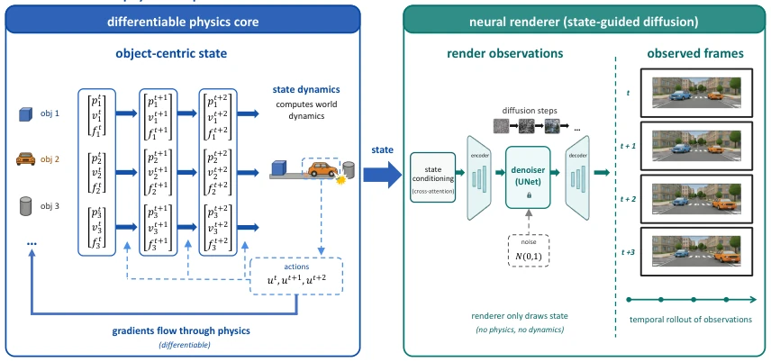
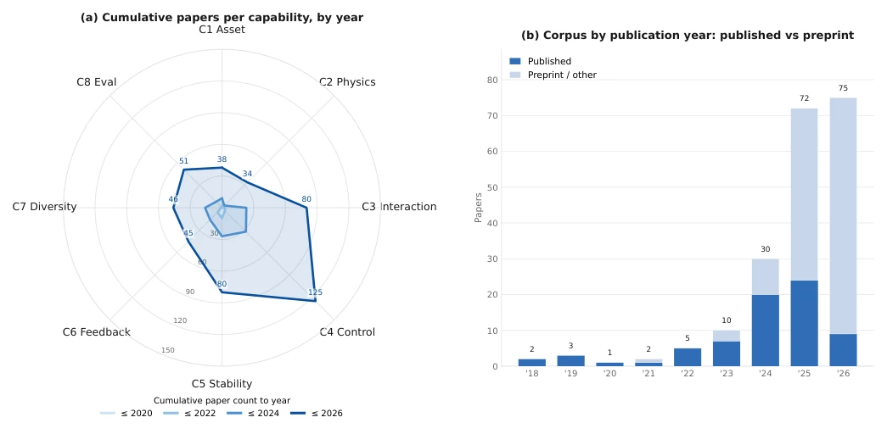
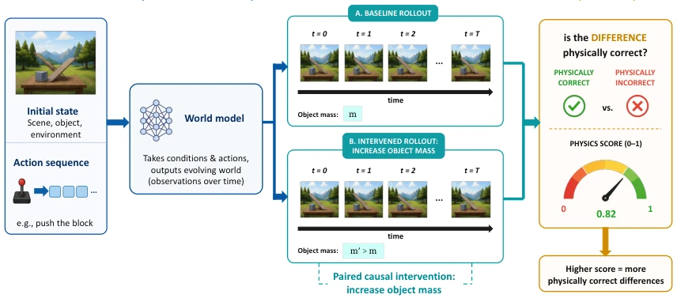
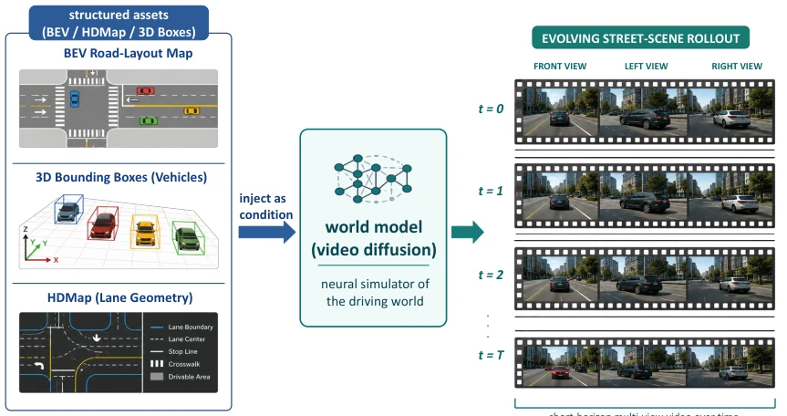
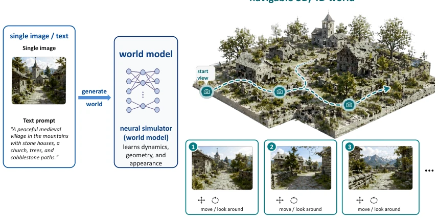
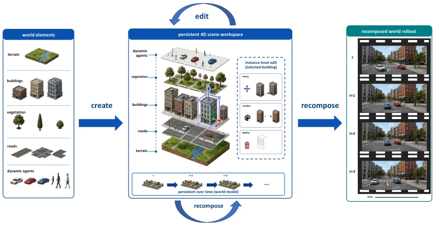
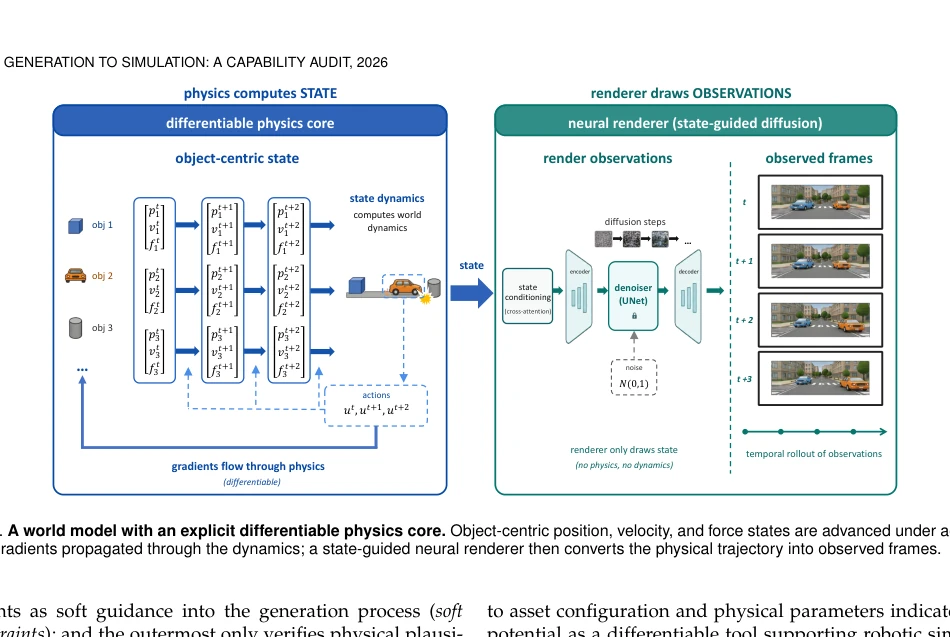
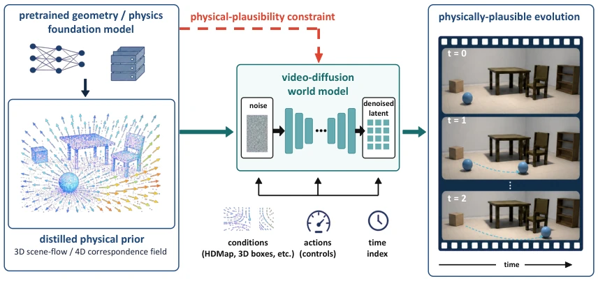

From Generation to Simulation: How Far Are World Models from Being True Simulators?
Tong Wang, Huan Deng, Mucheng Yang, Yang He, Xiaohui Kuang, Gang Zhao abspdf
论文点评Review
这篇论文给“世界模型即模拟器”的狂热泼了盆冷水。作者没搞新模型，而是拿着“传统模拟器能力清单”去审计了 200 篇论文。结果挺扎心：生成式世界模型在可控性和交互上确实强，但在物理定律保证和状态反馈上简直是“裸奔”。最毒舌的是，163 篇实现论文里只有 6 篇暴露了运行时状态接口，这哪是模拟器，分明是黑盒生成器。虽然 Sora 和 Cosmos 吹得天花乱坠，但离真正的物理引擎还差着“可验证性”和“结构化反馈”这两座大山。这篇审计报告比任何 SOTA 模型都诚实，直接指出了从生成到模拟的鸿沟，建议开发者别光看视频生成效果，先问问能不能查物理参数。
This paper poured cold water on the hype of "World Models as Simulators". The authors did not develop new models, but audited 200 papers using a "traditional simulator capability checklist". The results were quite disheartening: Generative world models are indeed strong in controllability and interaction, but in terms of physical law guarantees and state feedback, they are practically operating without safeguards. The most biting observation is that among 163 implementation papers, only 6 exposed runtime state interfaces; this is not a simulator, but clearly a black-box generator. Although Sora and Cosmos are hyped to the skies, they are still far from true physics engines, separated by two major barriers: "verifiability" and "structured feedback". This audit report is more honest than any SOTA model, directly pointing out the gap from generation to simulation, suggesting developers not only look at video generation effects but first ask if they can query physical parameters.
研究动机Motivation
随着扩散模型和大型视频生成进展，业界期待生成式世界模型能取代传统物理引擎和 RL 环境。但现有综述多按架构或功能分类，缺乏对“模拟器能力”的系统评估。核心问题在于：生成式模型能否在严格意义上成为模拟器？现有工作如 Ha 和 Schmidhuber 的 World Models [1] 开启了隐空间预测，Cosmos [18] 试图构建物理 AI 基础模型，但它们是否具备传统模拟器的严谨性？特别是幻觉问题（物体凭空消失、几何漂移）和物理一致性（碰撞、动量守恒）缺乏形式化保证。此外，状态反馈接口缺失，导致无法进行闭环验证。本文旨在通过外部能力 yardstick，量化生成式世界模型与传统模拟器的真实差距，避免过度宣传。
With the progress of diffusion models and large-scale video generation, the industry expects generative world models to replace traditional physics engines and RL environments. However, existing reviews are mostly classified by architecture or function, lacking systematic evaluation of "simulator capabilities". The core issue lies in: Can generative models become simulators in a strict sense? Existing work such as Ha and Schmidhuber's World Models [1] opened up latent space prediction, Cosmos [18] attempts to build a physical AI foundation model, but do they possess the rigor of traditional simulators? Especially, hallucination problems (objects disappearing out of thin air, geometric drift) and physical consistency (collision, momentum conservation) lack formal guarantees. In addition, the lack of state feedback interfaces leads to an inability to perform closed-loop verification. This paper aims to quantify the real gap between generative world models and traditional simulators through an external capability yardstick, avoiding overhype.

Fig. 1. Overview of the survey. Centred on “world model as simulator”, the eight capabilities of a traditional simulator are arranged around it: asset construction, physics engine, interaction, controllability, stability, state feedback, diversity, and evaluation metrics. Each capability panel reports its coverage as a principal contribution across the 200-paper corpus, a status tag (strength / structural gap / neutral), and representative works. Controllability (62.5%), interaction (40%), and stability (40%) are tagged as strengths; asset construction (19%), the physics engine (17%), and state feedback (22.5%) as cross-route structural gaps; and diversity (23%) and evaluation metrics (25.5%) remain neutral.
The study constructed an eight-dimensional capability yardstick independent of technical routes, covering asset construction, physics engine, interaction, controllability, stability, state feedback, diversity, and evaluation metrics. Based on 200 papers from 2018 to 2026, a corpus was constructed, of which 163 are implementation papers. Analysis focuses on three mainstream technical routes: Implicit Dynamic Models (e.g., Dreamer series), Video Generation Models (e.g., Diffusion/AR), Joint Embedding Predictive Architecture (e.g., V-JEPA). Capability coverage for each route was encoded and counted paper by paper, quantifying the proportion of papers for each capability item. Specifically, a five-level labeling scheme (B1-B5) was designed for state feedback, auditing the exposure of runtime interfaces in 163 implementation papers, such as ontology information, sensor output, reward signals, etc. By comparing coverage rates of different routes on the eight capabilities, structural gaps were identified. For example, physics engine capability was involved in only 17% of papers, while controllability reached 62.5%. Finally, six future directions were distilled, such as formalized physics, unified action interfaces, etc., providing evidence support for next-generation simulators.

Fig. 3. Three principal routes to world modelling, distinguished by prediction space. A latent-dynamics model encodes observations into a compact state and rolls that state forward for decoding and control; a video-generative model predicts future observations directly in pixel or token space through diffusion or autoregressive generation; and a joint-embedding predictive model predicts a future representation against a target embedding without reconstructing pixels. The routes therefore expose different simulator interfaces: compact state for imagination and control, rendered observations for direct inspection, and abstract embeddings for efficient downstream prediction and planning.

Fig. 7. A world model with an explicit differentiable physics core. Object-centric position, velocity, and force states are advanced under actions with gradients propagated through the dynamics; a state-guided neural renderer then converts the physical trajectory into observed frames.
The experiment is essentially an empirical analysis of 200 papers. The corpus contains 72 published papers and 128 preprints, with the proportion of preprints from 2025-2026 rising significantly. Evaluation metrics are the paper coverage rate for each capability item. Main findings: Controllability, interaction, stability are strengths; asset construction, physics engine, state feedback are structural gaps. State feedback is most neglected, only 6/163 papers provide entity state query interfaces, which cuts off closed-loop verification. In terms of physics evaluation, some work like OrbiSim [10] attempts differentiable physics cores, but most rely only on visual plausibility. Benchmarks such as WorldBench [110] and DrivingGen [109] provide evaluation dimensions, but lack unified standards. Ablation analysis shows that latent space models have advantages in planning efficiency, but pixel generation models are stronger in visual fidelity, and the two are trending towards fusion. The study also found that only a few works like Cosmos [18] provide a unified platform, while most remain at specific scenarios.

Fig. 2. Research attention across the eight simulator capabilities and the corpus composition, 2018–2026. (a) Cumulative papers contributing each capability, drawn as nested year slices (to 2020/2022/2024/2026); the radial value is the number of papers for which that capability is a principal contribution, and the number at each vertex is its 2026 total. Controllability, interaction, and stability dominate, while asset construction, the physics engine, and state feedback stay low. (b) The 200-paper corpus by publication year, split into published (72) and preprint / other (128); the corpus is increasingly preprint-dominated in 2025–2026.

Fig. 9. Physics evaluation through paired causal intervention. A baseline and an intervened rollout share the scene and action sequence but differ in one physical variable, such as object mass; evaluation asks whether the resulting difference follows the expected physical consequence.
其他图片Other Figures

Fig. 4. Structured assets as conditional input to a world model. BEV road layouts, HD maps, and 3D bounding boxes specify the geometry and traffic configuration supplied to a video-diffusion world model, which produces a temporally evolving, multi-view street-scene rollout consistent with those conditions.

Fig. 5. Generation of a navigable 3D/4D world from sparse input. A single image or text description conditions a world model that constructs an environment with spatial extent and renders consistent observations along a user-controlled camera path.

Fig. 6. A unified platform for persistent and editable world assets. Terrain, buildings, vegetation, roads, and dynamic agents are maintained as separable layers; instance-level edits update the persistent scene before the world model generates a recomposed rollout.

Figure 7 separates physical state evolution from observation rendering: the differentiable core computes the dynamics, and the neural renderer only visualizes the resulting state. This is the most radical direction: not content to make the model look as if it obeys physics, it makes the model itself take on the role of a physics engine. OrbiSim [10] is representative, with an architecture of two cooperating modules. OrbiSim-Dynamics is an object-centric differen- tiable physics core that computes physical evolution (po- sition, velocity, object configuration) in an explicit state space, where all intermediate physical quantities are acces- sible and differentiable, so gradients can propagate from downstream policy loss all the way through the physics simulation back to action and physical

Fig. 8. Soft physical constraints in a generative world model. A pretrained geometry or physics model supplies a dense scene-flow or 4D-correspondence prior as a training constraint, while the conditioned video-diffusion model remains responsible for generating the evolving observations.